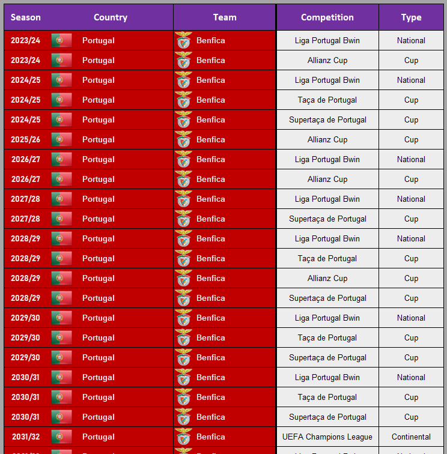

Python Football Manager - Introduction
Hello there! If you are reading this you are probably an avid FM player and you are looking for new ways to play it, right? Believe me when I say there are a lot of ways to do it!
I started playing it back in 2011 when I was only 11 due to influence of my brother. He is way older than me and he has been playing manager games since the good old CM 01/02. When I was around 6 or 7 there was only one computer at home and I remember spending a lot of time just watching him play! Growing up we talked a lot about our saves and it nurtured my passion for tracking my saves. Each FM save is an entirely different universe and it would be such a waste to just forget about your saves! This is why I have been developing ways to keep my saves alive forever, using spreadsheets and screenshots. When I learned about Python, though, things got serious.
Spreadsheets
Before we head to the Python stuff, I think the best course of action would be to take a look at the spreadsheets. After all, it's because of them that I developed more and more my passion for data and stats-tracking in FM. I don't use the spreadsheet to scout, only to track specifically things from my club. It includes basically my players and matches. But I have other visualizations that derive from that.
This is the central part of the spreadsheet. I input data in this sheet twice a month. It is produced by a Python script that joins Genie Scout data with an FM export of all of my players.
This is the Intake sheet. It's automatically feeded by the previous one and it shows every player that appeared for the first time with at most 19 years old. It doesn't include only Intake players (although I could change it to make it so) but all players that joined the club with 19 years maximum. This allows me to track not only Youth Intake players but all youngsters I sign. The columns represent the Rating of the player in each of the exports. As I said, we have two exports for each season, the silver being the midseason one. This is amazing because I can follow my players evolution every 6 months!
This is the Best XI sheet. Every season end I export the UIDs of the players I want to see here. It doesn't take much time, you just have to put them into the formation as you usually do and then sort by position before exporting. This is one of my favorite screens!
This is the Records sheet. It also uses the sheet from the first screenshot to calculate the total amount of stats by player. You can see there's a blunder in the Appearences ranking, but in general it works perfectly. This is also a screen I love looking at. You can remember at a glance about your best goalscorers, best passers, best defenders...
This is also a very important sheet. It is a list of all players who wore my club's jersey (in this case, Crewe Alexandra) during my save. It has a bit of manual input, because I need to insert the UIDs of all players who join. This is not so hard because the first sheet has a flag that indicates if the player is present in this sheet, so I just select the ones who are not and copy their UIDs here.
This is also done by a Python script using the export from the Schedule screen. It feeds two other sheets.
This is another fun table to look at. It's a summary by competition by year, close to what Wikipedia has on some pages. Everything here is done automatically using the previous sheet, I just input the competitions from given year and my final placement.
Nothing special here, just my trophy cabinet!

The highlight of the night! A lot of flags and stats in a single place. A summary of each season remembering the most important players. This is one of the best sheets to look a while after finishing your save.
How do I collect data from Football Manager?
As I said earlier, I make two exports every season. One mid-season and one at the end. This allows me to keep track of the stats of not only my players but thousands of others. I am also not limited anymore to scouting only current season stats, like FM does. Stats resetting at the end of the season are no longer a problem! I can concatenate the exports and calculate the career stats of thousands of players. This demands a bit of effort though. We have to create 4 files!
The first one is the FM export. Using a custom view, I filter my search to less than 40.000 players because Python can't really process HTMLs bigger than 50 or 60MB. I then select all the players using CTRL+A and export it to HTML using CTRL+P
The three others come from Genie Scout. Don't worry, we won't cheat! Genie Scout takes into account the ability of a player to play in a position when it calculates positional ratings. This means that we can infer the preferred position of many players. There's no way to do this directly with FM other than manipulating the strings like "D (C)" or "D (LC), DM". It's hard to do it and Genie Scout provides a much easier approach. We are also able to extract the Club ID from every player. This will be important later on because we need this to get the club logo for our visualizations! For the first Genie export, just load the game into it, select the custom view and export all players to CSV.
The other ones are the 'Interested filter' and the 'Custom filter'. Whenever you are in the player search screen in FM, you are able to load these exact players into Genie Scout. So what you want to do is to use the same filter as above but now ticking the 'Interested' button. Then you load all these players into Genie and, once again, export to CSV. The Python script will create a binary column indicating if a player is interested or not in joining you and this may be useful when you are deciding who to hire. The 'Custom filter' works in a similar way. You export a selected list and it will create a binary column. I use it to filter high potential players (usually 4 or 4.5* PA).